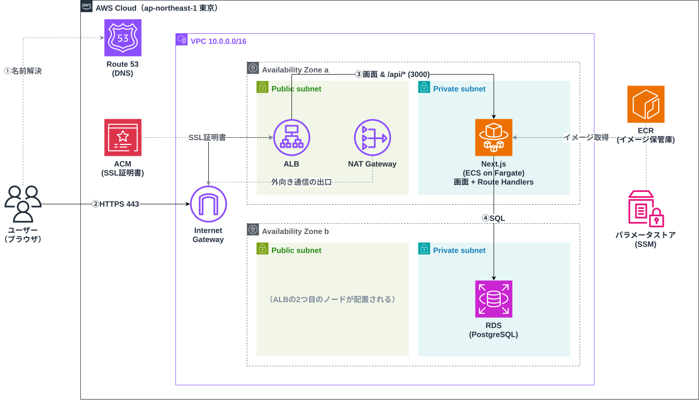

00
🗺️ 全体像 — なぜ静的デプロイと違うのか
静的サイトは「完成したファイルを置くだけ」でしたが、動的アプリは「サーバーが動き続けて、リクエストのたびに処理をする」必要があります。
まず、この違いと登場人物の全体像を押さえます。
静的デプロイ（前回まで）
HTML/CSS/JSという「完成品のファイル」をS3に置き、CloudFrontが配るだけ。
サーバー側で計算する処理がないので、置き場所と配送だけ考えればよい。
動的デプロイ（今回）
Next.jsアプリがリクエストごとにDBを読み書きして応答を作る。
「アプリを動かし続ける場所（ECS）」「DB（RDS）」「その間を繋ぐネットワーク（VPC）」が新たに必要になる。
コンテナとは
アプリ本体と、動かすのに必要なもの（Node.js・ライブラリ・設定）を1つの箱に詰めたもの。
「自分のPCでは動いたのに」を無くし、どこでも同じように動かせる。
Dockerはこの箱を作る・動かす代表的なツール。
ECSとは
コンテナを本番で動かすための「運行管理者」。
何個動かすか・落ちたら再起動する・新バージョンに入れ替える、といった管理を引き受けるオーケストレーションサービス。
Fargateとは
コンテナを載せる「土台のサーバー」をAWSに任せる方式（サーバーレス）。
EC2方式だと土台のOS管理・台数調整も自分の仕事になるが、Fargateなら「CPUとメモリの量」を指定するだけでよい。
今回作った構成の全体図
この図の登場人物を、01〜04章で1つずつ「何者か」「無いとどうなるか」まで振り返ります。
※ 今回のハンズオンではRoute53とACMは使っておらず、ALBのDNS名にHTTPでアクセスしました。独自ドメイン＋HTTPS化は
補足章（座学）で扱います。
💡
TIPS
「ウィザード無しでイメージが湧くか」が今回のゴール
マネジメントコンソールのウィザードに従えば作れてしまいますが、それだと「なぜこの画面でこれを選んだのか」が残りません。
各サービスの役割と繋がりを自分の言葉で説明できる状態を目指します。
クイズ
🔺 発展 … ハンズオンの範囲を超える知識を含む問題です。今は解けなくても大丈夫。
Q1. 🔺 発展コンテナとは何ですか？「仮想マシン（EC2にOSを立てる）との違い」を交えて説明してください。
A. アプリと実行に必要な環境（ランタイム・ライブラリ・設定）を1つにまとめたパッケージです。
仮想マシンはOSごと丸ごと複製するため起動が遅く重いのに対し、コンテナはホストのOSを共有して「アプリに必要な部分だけ」を隔離するため、軽量で起動が速く、同じイメージならどこでも同じ動作をします。
💼 現場では: 「開発環境では動いたのに本番で動かない」を潰せるのが最大の価値です。ローカル開発（docker compose）から本番（ECS）まで同じイメージを使い回します。
Q2. ECSとFargateの関係を説明してください。それぞれ何を担当しますか？
A. ECSは「コンテナをいくつ・どう動かすか」を管理するオーケストレーター（運行管理者）です。
Fargateは、そのコンテナを実際に載せる「土台のサーバー」を用意する起動タイプの1つで、サーバーの管理をAWSが肩代わりします。
つまり「管理はECS、土台はFargate」という分担で、Fargateの代わりにEC2を土台にする選択肢もあります。
💼 現場では: まずFargateが第一候補です。OSのパッチ当てや台数管理が不要なぶん運用が軽く、EC2起動タイプはGPUが必要・コストを極限まで下げたい等の特殊事情がある場合に検討します。
Q3. 今回のNext.jsアプリは、なぜS3+CloudFrontの静的デプロイでは公開できないのでしょうか？
A. S3は置かれたファイルをそのまま返すことしかできず、サーバー側でコードを実行できないためです。
今回のアプリはリクエストのたびにDBを読み書きしてページを組み立てる（SSR・APIルート）ので、Node.jsが動き続けるサーバーが必要になります。
そのサーバー役がECS上のコンテナです。
💼 現場では: 「静的で済むものは静的に寄せる」が定石です。動的サーバーは維持費も運用の手間も掛かるため、LPやドキュメントはS3+CloudFront、アプリ本体だけECS、のように使い分けます。
チェックリスト（{{ ovCheckedCount }} / {{ ovCheckTotal }}）
{{ item.mark }}
{{ item.label }}
01
🕸️ ネットワーク — VPC / サブネット / IGW / NAT / AZ
今回いちばん大事な章です。
「アプリやDBを、インターネットからどれだけ離れた場所に置くか」を設計するのがネットワークで、以降のすべてのサービスはこの上に載ります。
VPC
AWSの中に作る「自分専用のネットワーク区画」。
この中に置いたものは、許可した経路以外では外と繋がらない。
敷地全体のイメージ。
サブネット
VPCの中をさらに区切った部屋。
「インターネットに面した部屋（パブリック）」と「面していない部屋（プライベート）」を分けて使う。
IGW（インターネットゲートウェイ）
VPCとインターネットを繋ぐ唯一の玄関。
これをVPCにアタッチし、ルートを向けたサブネットだけが外と直接通信できる。
NATゲートウェイ
プライベートサブネットの住人が「外に出る用事だけ」を済ませるための出口。
外から中への進入は通さない、一方通行のドア。
AZ（アベイラビリティゾーン）
リージョン内で物理的に離れたデータセンター群。
2つ以上のAZにまたがって配置すると、片方の障害でもサービスが止まらない。
ルートテーブル
各サブネットの「道案内表」。
0.0.0.0/0（外向き）の行き先がIGWならパブリック、NATならプライベート——サブネットの性格はここで決まる。
経路で見るVPC — 「入ってくる道」と「出ていく道」
この構成は「今回作った構成の全体図」と同じVPC・同じAZ-1aを使っています。
同じ構成のまま、道順ごとに矢印だけを分けて描いたのが以下の2枚です。
実線＝ユーザーのリクエストが「入ってくる道」（必ずALBを通る）。
紫の点線＝プライベートサブネットの住人が「出ていく道」（NAT経由の一方通行）。
この2本の道を別々に描けるようになるのがこの章のゴールです。
これが無いとどうなる？
「動かなくなるもの」を1つずつ言えると、各部品の存在理由が説明できるようになります。
💡
TIPS
「パブリック/プライベート」はサブネット自体の属性ではない
サブネット作成画面に「パブリックにする」というスイッチはありません。
ルートテーブルの0.0.0.0/0の行き先がIGWならパブリック、NAT（または無し）ならプライベート、と呼び分けているだけです。
迷ったらルートテーブルを見るのが正解です。
💡
TIPS
NATゲートウェイは「置いてあるだけ」で課金される
時間課金＋データ処理課金で、学習用アカウントの請求で一番驚かれやすいサービスです。
ハンズオンが終わったら削除する、を徹底してください。
クイズ
Q1. パブリックサブネットとプライベートサブネットの違いは、何によって決まりますか？また、今回ALBとECS/RDSをどちらに置きましたか？
A. ルートテーブルで決まります。
外向き通信（0.0.0.0/0）の行き先がIGWに向いていればパブリック、向いていなければプライベートです。
今回は、外から受け付ける必要があるALBとNATゲートウェイをパブリックへ、外から直接触られたくないECSタスクとRDSをプライベートへ置きました。
💼 現場では: 「外に晒すのは入口（ALB）だけ、アプリとDBは奥に隠す」がWeb構成の原則です。この配置を崩す構成はレビューでまず指摘されます。
Q2. IGWとNATゲートウェイは、どちらも「外と通信するためのもの」に見えます。決定的な違いは何ですか？
A. 通信の向きです。
IGWは双方向の玄関で、外から中へのアクセスも中から外へのアクセスも通します。
NATゲートウェイは「中から外へ」の一方通行専用で、中から始めた通信の返事は通しますが、外から始めた通信は一切通しません。
だからプライベートサブネットの安全性を保ったまま、ECRからのpullやOSアップデートだけができます。
💼 現場では: 「外に出たいだけならNAT、外から受けたいならIGW＋パブリック配置」と覚えます。この区別が曖昧なままだと、後のトラブルシューティングで必ず迷子になります。
Q3. サブネットを2つのAZに分けて作ったのはなぜですか？1つのAZに全部置くと何が困りますか？
A. AZは物理的に離れたデータセンター群なので、片方のAZで障害（停電・ネットワーク断など）が起きても、もう片方でサービスを続けられるようにするためです。
1つのAZに全部置くと、そのAZの障害＝サービス全停止になります。
また、ALBやRDS（マルチAZ構成）はそもそも「2つ以上のAZのサブネット」を要求するため、1AZでは作れません。
💼 現場では: 本番は最低2AZが常識です。ただしAZをまたぐ通信やNATの複数配置はコストが増えるため、検証環境は1AZ相当に絞るなどメリハリを付けます。
チェックリスト（{{ netCheckedCount }} / {{ netCheckTotal }}）
{{ item.mark }}
{{ item.label }}
02
🚪 入口と振り分け — ALB / ターゲットグループ / SG
ユーザーのリクエストを最初に受け止めて、健康なコンテナに振り分けるのがALB。
そして各所のドアの通行ルールを決めるのがセキュリティグループ（SG）です。
ALB
Application Load Balancer。
リクエストを複数のコンテナへ分散する受付係。
HTTPの中身（パスやホスト名）を見て振り分けられるレイヤー7のロードバランサー。
ターゲットグループ
ALBが振り分ける「宛先リスト」。
ECSサービスと紐付けると、タスクの起動・停止に合わせて宛先が自動で登録・解除される。
ヘルスチェック
ALBが宛先に定期的に「生きてる？」と確認する仕組み。
失敗が続いた宛先には振り分けを止め、ECS側はそのタスクを入れ替える。
セキュリティグループ（SG）
リソース単位のファイアウォール。
「許可するものだけを書く」ホワイトリスト方式で、書いていない通信はすべて拒否される。
SGチェーン — 「前段のSGだけを許可する」の連鎖
💡
TIPS
「レイヤー」はOSI参照モデルの階層のこと
レイヤー4（トランスポート層）はIPアドレスとポート番号までしか見えず、レイヤー7（アプリケーション層）はHTTPの中身（URLパス・ヘッダーなど）まで見えます。
ALBはL7なので「/apiはこのグループへ」のようなパスベースの振り分けができます。
L4で高速に捌くNLB（Network Load Balancer）という別の選択肢もあります。
クイズ
Q1. SGは「ホワイトリスト」「ブラックリスト」どちらの方式ですか？その方式だと何が嬉しいですか？
A. ホワイトリスト方式です。
「許可する通信だけ」をルールとして書き、書かれていない通信はすべて自動的に拒否されます。
拒否ルールの書き漏らしで穴が開く心配がなく、「開けた覚えのあるものしか開いていない」状態を保てるのが利点です。
💼 現場では: SGのルール一覧は「この構成の通信仕様書」としてそのまま読めます。逆に0.0.0.0/0で全開放されたSSHやDBポートは監査で真っ先に指摘される定番です。
Q2. ターゲットグループは何のためにありますか？「ALBが直接ECSタスクに送ればいいのでは」に答えてください。
A. ECSタスクは入れ替わるたびにIPアドレスが変わるため、ALBに固定の宛先を直接教える方法では破綻します。
ターゲットグループという「宛先リスト」を間に挟み、ECSサービスがタスクの起動・停止に合わせてリストを自動更新することで、ALBは常に「今生きている宛先」へ送れます。
ヘルスチェックの設定もこのターゲットグループ単位で持ちます。
💼 現場では: 新旧バージョンを2つのターゲットグループに分けて徐々に切り替える（ブルー/グリーンデプロイ）など、リリース戦略の単位としても使われます。
Q3. ヘルスチェックは何をしていて、失敗が続くと何が起きますか？
A. ALBがターゲット（ECSタスク）の指定パス（例: /）へ定期的にHTTPリクエストを送り、正常な応答（200など）が返るかを確認しています。
失敗が続いたターゲットはunhealthy扱いになって振り分け対象から外れ、ECSサービスがそのタスクを止めて新しいタスクを起動します。
つまり「壊れたコンテナを自動で入れ替える」仕組みの起点です。
💼 現場では: unhealthyの原因はアプリ障害よりも「ヘルスチェックのパス間違い」「SGでポートが通っていない」などの設定ミスが大半です。タスクが起動→即終了を繰り返していたら、まずここを疑います。
チェックリスト（{{ edgeCheckedCount }} / {{ edgeCheckTotal }}）
{{ item.mark }}
{{ item.label }}
03
🗄️ データと秘密情報 — RDS / パラメータストア
アプリのデータを預かるRDSと、DBパスワードなどの秘密情報をコードの外に置くためのパラメータストアです。
RDS
PostgreSQLやMySQLなどのDBを「マネージド」で使えるサービス。
バックアップ・パッチ適用・障害時のフェイルオーバーをAWSが引き受けてくれる。
EC2に自分でDBを入れる場合、これらは全部自分の仕事になる。
パラメータストア
Systems Managerの一機能で、設定値や秘密情報（DB接続文字列など）の保管庫。
ECSのタスク定義から参照でき、コンテナ起動時に環境変数として注入される。
秘密をコードやイメージに埋め込まずに済む。
Aurora と 素のRDS（RDS for PostgreSQL）の使い分け
どちらも「マネージドなPostgreSQL互換DB」ですが、性格が違います。
RDS for PostgreSQL: コミュニティ版PostgreSQLそのもの。小さく始められて安く、学習・小規模サービス向き。
Aurora: AWSがストレージ層を作り直した上位版。性能・可用性・スケールに優れるが、最低コストが高い。
迷ったら「まず素のRDSで始めて、性能や可用性の要求が上がったらAuroraを検討」で問題ありません。
💡
TIPS
RDSも「置いてあるだけ」で課金される
RDSはインスタンスが起動している時間で課金されます（NATゲートウェイと並ぶ消し忘れ課金の2トップ）。
使わない期間は一時停止（最大7日）か削除を忘れずに。
クイズ
🔺 発展 … ハンズオンの範囲を超える知識を含む問題です。今は解けなくても大丈夫。
Q1. RDSを使うのと、EC2に自分でPostgreSQLをインストールするのとでは、何が違いますか？
A. DBエンジン自体は同じですが、運用の担当範囲が違います。
RDSでは自動バックアップ・パッチ適用・マルチAZのフェイルオーバー・ストレージ拡張をAWSが提供します。
EC2に自分で入れる場合、これらをすべて自分で設計・運用する必要があり、障害対応も深夜に自分でやることになります。
💼 現場では: DBを自前運用する理由（特殊な拡張やOSレベルのチューニングが必要など）がない限り、RDS一択です。「運用をお金で買う」典型例として説明されます。
Q2. 🔺 発展パラメータストアとSecrets Managerは何が違いますか？どちらを選ぶべきでしょうか？
A. どちらも秘密情報の保管庫ですが、Secrets Managerには「シークレットの自動ローテーション（定期的なパスワード自動変更、RDSとの連携）」があり、その分有料です。
パラメータストア（スタンダード）は無料で、設定値と秘密情報を手軽に置けますが、ローテーションは自前になります。
学習・小規模ならパラメータストア、本番のDB認証情報でローテーション要件があるならSecrets Manager、が目安です。
💼 現場では: 「DBパスワード類はSecrets Manager、それ以外の設定値はパラメータストア」と使い分けるチームが多いです。コストとローテーション要否で決めます。
Q3. DBの接続情報を、コンテナイメージの中に直接書いてはいけないのはなぜですか？
A. イメージを手に入れた人全員にパスワードが渡ってしまうためです。
イメージはECRから取得したり、レイヤーを展開したりすれば中身を見られます。
また、パスワードを変えるたびにイメージの作り直しが必要になり、環境ごと（開発/本番）に接続先を変えることもできなくなります。
だから秘密情報は外部（パラメータストア）に置き、起動時に注入します。
💼 現場では: Gitリポジトリへの秘密情報コミットも同じ理由でNGです。push前に検知するツール（git-secrets等）を入れるのが一般的です。
チェックリスト（{{ dataCheckedCount }} / {{ dataCheckTotal }}）
{{ item.mark }}
{{ item.label }}
04
📦 コンテナの置き場と実行 — ECR / ECS
作ったコンテナイメージを「どこに置いて」「どう動かすか」。
ECS周りは似た用語が多いので、タスク定義・タスク・サービス・クラスターを区別できれば勝ちです。
ECR — イメージの置き場（push → pull の流れ）
Elastic Container Registry。Docker Hubに相当するAWS内のイメージ置き場です。
①手元（またはCI）で docker build → ②ECRへ docker push → ③ECSがタスク起動時にECRから pull、という流れで届きます。
pushには認証（aws ecr get-login-password）が必要で、pull側の権限はタスク実行ロールが持ちます。
タスク定義
コンテナの起動レシピ。
どのイメージを、CPU/メモリいくつで、どんな環境変数で動かすかを書いた設計書。
タスク
タスク定義から実際に起動した実体（実行中のコンテナ群）。
レシピに対する「料理そのもの」。
サービス
「タスクを常に○個動かし続ける」を守る監督。
落ちたら自動で起動し直し、ALBのターゲットグループへの登録も担う。
クラスター
タスクやサービスをまとめる論理的な入れ物。
Fargateならサーバー管理がないため「プロジェクトの箱」くらいの感覚でよい。
💡
TIPS
タスク実行ロールとタスクロールは別物
タスク実行ロールは「ECSがタスクを立ち上げるため」の権限（ECRからpull、パラメータストア読み取り、ログ出力）。
タスクロールは「アプリ自身がAWSを使うため」の権限（例: アプリがS3にファイルを置く）。
「起動するための権限」と「動いてから使う権限」で分かれています。
クイズ
Q1. コードを修正してから、それが本番のECSで動き出すまでの流れを順番に説明してください。
A. ①docker buildで新しいイメージを作る → ②ECRへpushする → ③タスク定義の新リビジョンを作る（新イメージを指す） → ④ECSサービスを更新する → ⑤サービスが新タスク定義でタスクを起動し、ヘルスチェックが通ったらALBの振り分け先が新タスクに切り替わり、旧タスクが停止される。
💼 現場では: この一連の流れは手作業ではなくCI/CD（GitHub Actionsなど）で自動化します。「mainにマージしたら勝手に本番へ」が標準的なゴールです。
Q2. 「タスク定義」「タスク」「サービス」「クラスター」を、それぞれ一言で説明してください。
A. タスク定義＝コンテナの起動レシピ（設計書）。
タスク＝そのレシピから起動した実行中の実体。
サービス＝タスクを指定数だけ動かし続ける監督（自動復旧・ALB連携）。
クラスター＝それらをまとめる入れ物。
「レシピ→料理→料理を出し続ける店長→お店」の比喩で覚えると混ざりにくいです。
💼 現場では: 障害調査で「サービスのイベント」→「タスクの停止理由」→「タスクのログ」の順に掘るため、この階層関係が頭に入っているかで調査速度が大きく変わります。
チェックリスト（{{ conCheckedCount }} / {{ conCheckTotal }}）
{{ item.mark }}
{{ item.label }}
05
🚑 トラブルシューティングの順序
「ALBのDNS名にアクセスしたのに画面が出ない」。
このとき手当たり次第に見るのではなく、リクエストの通り道の順（外→中）に確認するのが鉄則です。
1
SG — ドアは開いているか
ALBのSGはインターネットから80/443を許可しているか。
ECSのSGは「ALBのSGから」アプリのポート（3000）を許可しているか。
RDSのSGは「ECSのSGから」5432を許可しているか。
症状: タイムアウト（応答が永遠に返らない）はSGの疑いが濃い。
2
ターゲットグループ — 宛先はいるか、healthyか
ターゲットが1つも登録されていない → ECSサービスとの紐付けを確認。
登録されているがunhealthy → ヘルスチェックのパス・ポート設定と、SG（ALB→ECS間）を確認。
症状: 503 Service Unavailableは「振り分け先がいない」サイン。
3
タスク — そもそも起動しているか
タスクが起動→即停止を繰り返す場合、サービスのイベント欄と「タスクの停止理由」を見る。
ECRからpullできない（NAT/権限）、パラメータストアを読めない（実行ロール）、が定番。
症状: 実行中タスク数が希望数に届かない。
4
アプリのログ — 最後にコードを疑う
ここまで来て初めてCloudWatch Logsでアプリのエラーを読む。
DB接続エラーならRDSのSG・接続文字列（パラメータストアの値）を確認。
症状: 500 Internal Server Errorはアプリ側に到達している証拠。
💡
TIPS
体感では、詰まりの大半はネットワーク周り（SG・TG）
「コードが悪いのでは」と疑う前に、SGの許可とターゲットグループの状態を先に見ると早く着地します。
エラーの種類（タイムアウト / 503 / 500）で、どの段で止まっているかの当たりも付けられます。
クイズ
Q1. ALBのDNS名にアクセスすると「503 Service Unavailable」が返ります。タイムアウトではなく503です。どこから調べますか？
A. 503が返るということは、ALB自体には届いています（SGの外側は通っている）。
ALBが「振り分けられる健康な宛先がいない」と言っているので、ターゲットグループを見ます。
ターゲットが未登録ならECSサービスとの紐付け、unhealthyならヘルスチェック設定とALB→ECS間のSG、タスクがそもそも起動していないならECS側（停止理由・ログ）へ掘り進めます。
💼 現場では: ステータスコードは「どこまで届いたかの証言」です。タイムアウト＝ALB手前、503＝ALBまで、500＝アプリまで、とまず切り分けます。
Q2. ECSタスクが「起動→数分後に停止」を繰り返しています。アプリのログには特にエラーがありません。何が起きていそうですか？
A. ヘルスチェック失敗によるタスクの入れ替えが疑わしいです。
アプリは正常に動いていても、ヘルスチェックのパスが間違っている（そのパスが404を返す）、またはALB→ECS間のSGでポートが通っていないと、ALBからはunhealthyに見えます。
unhealthyなタスクはECSサービスによって停止・再作成されるため、「元気なのに殺され続ける」ループになります。
💼 現場では: この「ヘルスチェック設定ミスによる再起動ループ」は初回構築の定番ハマりです。ターゲットグループのヘルスチェック結果と、タスクの停止理由（Task failed ELB health checks）を突き合わせれば確定できます。
チェックリスト（{{ tsCheckedCount }} / {{ tsCheckTotal }}）
{{ item.mark }}
{{ item.label }}
06
🌱 作ってみて気付くこと → 次の一歩
ここまで手を動かした人が必ず感じる「気付き」は、そのまま次に学ぶべきテーマに繋がっています。
「1から手で作るの、大変すぎない？」 → IaC（Infrastructure as Code）
VPC→サブネット→SG→RDS→ECR→ECS→ALBと、順番も依存関係も多く、画面ポチポチでは再現も共有もできません。
この構成をコード（Terraform・CDK・CloudFormation）で書けば、同じ環境を何度でも・別環境（dev/stg/prod）にも作れます。
「今日ウィザードで選んだ項目」がそのままコードのパラメータになるので、ハンズオン直後がIaC入門の最高のタイミングです。
「デプロイのたびに手でpushして更新するの？」 → CI/CD
build→push→タスク定義更新→サービス更新の流れは、GitHub Actionsなどで自動化するのが標準です。
「mainにマージされたら本番に反映」まで組めると、開発の景色が変わります。
「消し忘れが怖い」 → コスト管理
NATゲートウェイとRDSは「置いてあるだけ」で課金される代表格です。
Budgets（予算アラート）の設定と、ハンズオン後の片付け（09章）をセットで習慣にしてください。
「本番はこれで十分？」 → 監視・ログ・スケーリング
今回の構成に、CloudWatchアラーム（異常検知）、オートスケーリング（負荷に応じたタスク数の増減）、WAF（攻撃対策）を足していくと本番相当に近づきます。
SAAの学習範囲とも重なる領域です。
補足
🔒 HTTPS化 — ACM / Route53 / CloudFront（座学）
今回のハンズオンではALBのDNS名（HTTP）で動作確認しましたが、実際の公開には独自ドメイン＋HTTPSが必須です。
手を動かす前の座学として、登場人物と2つの構成パターンを押さえておきます。
Route53
AWSのDNSサービス。
「example.com にアクセスされたらこのALB（またはCloudFront）へ」という名前解決の対応表を管理する。
ドメインの購入もここでできる。
ACM
AWS Certificate Manager。
HTTPSに必要なサーバー証明書を無料で発行し、更新も自動でやってくれる。
発行した証明書はALBやCloudFrontにアタッチして使う（証明書単体では何も起きない）。
CloudFront（再登場）
静的デプロイ編ではS3の前段でしたが、ALBをオリジンにもできる。
動的アプリの前段に置くと、HTTPS終端に加えてキャッシュ・WAF・エッジ配信の恩恵を受けられる。
構成パターンを切り替えて比べる
ユーザー → Route53（名前解決） → ALB（ACMの証明書でHTTPS終端） → ECS。
ALBにHTTPS(443)リスナーを追加し、ACMで発行した証明書をアタッチ。
HTTP(80)はHTTPSへリダイレクトさせるのが定番。
構成がシンプルで、今回のハンズオンの自然な延長。
ユーザー → Route53 → CloudFront（証明書はここ） → ALB → ECS。
静的アセットのキャッシュ・WAF・世界配信をエッジで受けられる。
静的デプロイ編の構成と合流するイメージで、「静的はS3オリジン、動的はALBオリジン」を1つのCloudFrontに同居させる構成も組める。
どちらを選ぶか
パターンAが向くケース：エッジキャッシュやWAF、複数オリジンの統合が要件になく、まずシンプルにHTTPS化したい場合。
パターンBが向くケース：グローバル配信・CDNキャッシュ・WAFが要件にある場合や、静的アセット（S3）と動的処理（ALB）を1つのCloudFrontに同居させたい場合。
迷ったらパターンAでよい。CloudFrontはALBの前段に後からいつでも足せるため、要件が固まってから追加する方が手戻りが少ない。
参考: HTTPS化まで含めた理想形の構成図
この構成図はパターンA

パターンAを実装すると、00章の構成図にRoute53とACMが加わってこの形になります。あくまで参考図で、今回のハンズオンでは作っていません。
💡
TIPS
CloudFront用のACM証明書は「バージニア北部（us-east-1）」で発行する
ALB用の証明書はALBと同じリージョンで発行しますが、CloudFrontはグローバルサービスのため、証明書はus-east-1で発行したものしか使えません。
「証明書が選択肢に出てこない」の原因No.1なので、座学の今のうちに覚えておいてください。
💡
TIPS
HTTPSは「終端」の後ろでHTTPに戻ってよい
ALB（またはCloudFront）でTLSを終端したら、その後ろのALB→ECS間はVPC内の閉じた通信なのでHTTPで流すのが一般的です。
「ユーザーとの間だけ暗号化されていればまず十分」という割り切りで、コンテナ側に証明書を持たせる必要はありません。
💡
TIPS
なぜこのハンズオンでは独自ドメイン＋HTTPS化をやらなかったのか
Route53とACM自体は無料利用枠の範囲でも試せますが、名前解決に使う.comドメインの取得には年間10ドル前後のコストがかかります。
無料の範囲だけで完結させたい本ハンズオンでは、この部分だけ座学（読むだけ）に留めています。
Appendix
SAA書籍で深掘りする
今回登場したサービスは、SAA（ソリューションアーキテクト − アソシエイト）試験の中心領域とほぼ重なります。
より深く理解したい場合は書籍で該当章を読んでみてください。
VPC
ELB（ALB）
ECS / Fargate
ECR
RDS / Aurora
Systems Manager
Route53
ACM